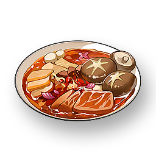

Jinzhou Maocai
Supplies

Increases the Crit. Rate by 30% for all Resonators in the team, lasts for 30 minutes, and only applies to the player's own Character in multiplayer games.
A dish made by Huanglong miners who, due to their busy work, threw various spices and Ingredients into the pot to cook, and it gradually evolved into the current Jinzhou Maocai.